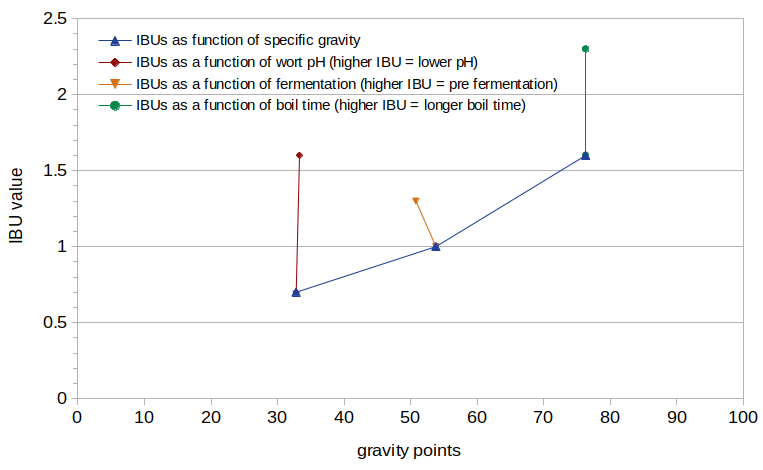
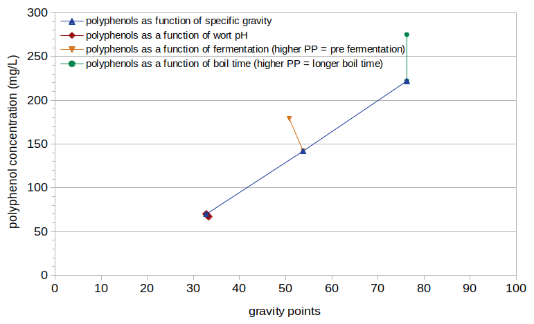
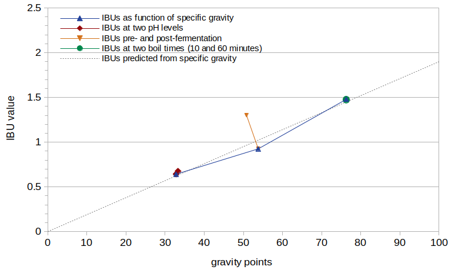
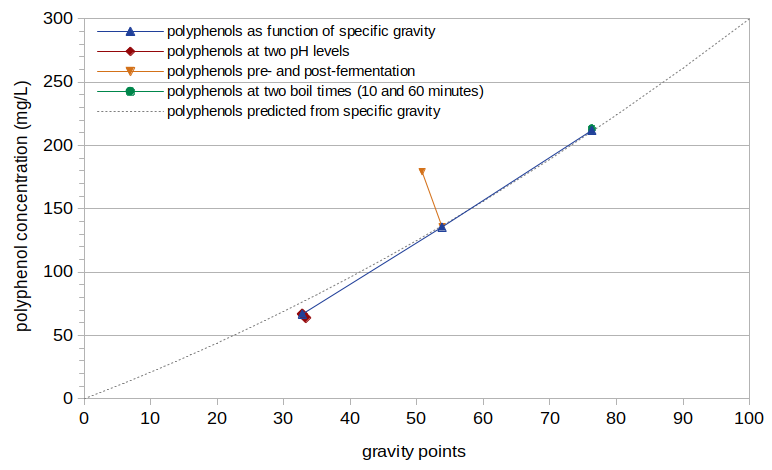
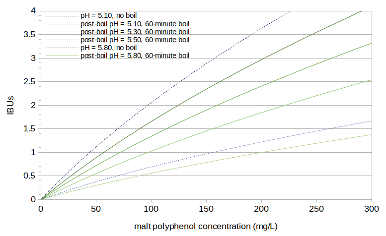

Abstract
This blog post analyzes the contribution of malt polyphenols to the IBU, in order to enable better estimates of the relative contributions of all auxiliary bittering compounds. These estimates may be used to develop better models and explanations of the factors that influence IBUs. The data from the experiment described here indicate that malt-derived IBUs (but not polyphenol concentrations) increase as the wort pH decreases, that the process of fermentation decreases polyphenol levels and IBUs by about 30%, and that the polyphenol concentrations (but not IBUs) increase during the boil.
1. Introduction
The IBU is mostly a measurement of the concentration of isomerized alpha acids (IAA) in beer, but it also includes concentrations of auxiliary bittering compounds (ABC, also referred to as nonIAA), which include oxidized alpha acids, oxidized beta acids, hop polyphenols, and malt polyphenols. Malt polyphenols contribute a small amount to the total IBU value of a beer. This contribution has been estimated at 1 to 3 IBUs [Shellhammer, p. 177]. I have no illusions of modeling IBUs with an error less than 3 IBUs, and so the purpose of this study is not to develop a hyper-accurate IBU formula. Instead, the purpose here is to better understand and model the relative contribution of all auxiliary bittering compounds to the IBU. This better modeling, including the contributions of oxidized alpha acids and hop polyphenols, may result in better IBU predictions, even if the average error is still greater than 3 IBUs. Having a better understanding of the relative contributions of different components may also enable better explanations of why IBUs change under certain circumstances, such as with the use of pellet hops as opposed to whole-cone hops.
There are not many references in the literature to malt-derived IBUs. Tom Shellhammer has said that the IBU "measurement yields a finite value in the range of 1 − 3 [IBU] for unhopped beer" [Shellhammer, p. 177]. Emily Parkin's thesis looked at the impact of dry hopping on an unhopped beer, and so she analyzed the control condition of an unhopped beer for both IBUs and polyphenol concentrations [Parkin, p. 23]. She found that an increase of 100 mg/L of hop polyphenols in the beer resulted in a 2.2 increase in IBUs [Parkin, p. 28]. I have not been able to find a similar published relationship between malt polyphenols and IBUs.
Yeast has only a minor effect on polyphenol concentrations during fermentation. As Steve Alexander states, "the impact of yeast on the amounts of phenolics in beer is quite small" [Alexander]. Leiper and Miedl also note that "little is lost during fermentation", but that "polyphenols are lost in cold break, and later in cold conditioning" [Leiper and Miedl, p. 136]. It is then unclear how much, if any, of the malt polyphenols are lost to trub and krausen deposits during fermentation.
In a previous blog post, I estimated that malt-derived IBUs could be approximated by the original gravity of the beer (in gravity points) multiplied by 0.025. Using this method, a beer with OG 1.050 is estimated to have 1.25 IBUs from malt polyphenols.
2. Experimental Overview
One purpose of the experiment described here was to answer some questions about the relationship between malt polyphenols and IBUs. For example, do malt-derived IBUs and/or malt polyphenol levels change with pH, boil time, or fermentation? A second purpose was to use the answers to these questions to develop a quantitative model of malt-derived IBUs. This new quantitative model can be compared with the model from the previous blog post. The degree of similarity between the two models (developed using different sets of data) provides a corresponding degree of confidence in the accuracy of the models.
This experiment produced of only six samples of wort or beer; the small number of data points means that any conclusions from this set of data are only preliminary. Three of the samples were designed to evaluate the relationship between specific gravity, IBUs, and polyphenols, with target gravities of 1.030 (Condition A), 1.050 (Condition D), and 1.070 (Condition E). Two samples were designed to evaluate the impact of pH on IBUs and polyphenols, with target pH levels of 5.80 (Condition A) and 5.30 (Condition B). Two samples were designed to evaluate the impact of fermentation, one of pre-fermentation wort (Condition C) and one of post-fermentation beer (Condition D). Finally, two samples were designed to evaluate the impact of boil time on IBUs and polyphenols, with boil times of 10 minutes (Condition E) and 60 minutes (Condition F).
In all conditions except for Condition B, the pH of the wort was not adjusted, and therefore the pH decreased as the specific gravity increased. In all conditions except for Condition F (with a 60-minute boil), the wort was boiled for 10 minutes (primarily to sterilize it).
3. Experimental Methods
Three batches of wort were created using the amounts of Briess Pilsen Light Dried Malt Extract (DME) and 120°F (49°C) low-alkalinity water listed in Table 1. The first batch was used to create Conditions A and B, the second batch to create Conditions C and D, and the third batch to create Conditions E and F. The resulting estimated volumes of room-temperature wort are listed in Table 1. All batches of wort sat for three hours to let the pH stabilize. For Conditions A and B, the wort was separated into two equal parts. One part (Condition A) was not modified, and the pH of the other part (Condition B) was adjusted with phosphoric acid to a room-temperature pH of 5.30. The measured (and temperature-corrected) pH levels and specific gravities are listed in Table 1.
Conditions C and D were boiled together as one batch of wort. After cooling, 4 oz (0.118 liters) were transferred to a sanitized sample container for analysis, becoming Condition C. This sample was refrigerated while the other samples fermented. The remainder of this batch became Condition D. Conditions E and F were boiled together for 10 minutes as one batch of wort, after which 15.5 oz (0.458 l) were transferred for cooling (becoming Condition E) and the remainder was boiled for another 50 minutes with tape sealing the lid to bring further evaporation close to zero (becoming Condition F).
The kettle was covered (but not completely sealed shut) during the 10-minute boil to reduce evaporation and the resulting changes in specific gravity. After boiling for 10 minutes (or 60 minutes for Condition F), the wort was quickly cooled in an ice bath. Once samples reached 75°F (24°C), they were transferred to sanitized quart (liter) containers. The five samples being fermented were aerated for 1 minute by vigorous shaking, and the amount of Safale US-05 yeast (age 12 months) listed in Table 1 was pitched in order to target 750,000 cells per ml and degrees Plato. These five samples fermented for 14 days with a small opening to vent CO2. (Condition D had a boil-over, and about 2 oz of wort were lost. The amount of yeast that was pitched was adjusted to account for the lost volume. Other samples had about 15 oz (0.44 liters) of wort available for fermentation.) The krausen was left to deposit on the sides of the vessel during fermentation. These deposits were removed one day before decanting analysis samples. All samples were analyzed for polyphenols and IBUs by Oregon BrewLab.
| Conditions A, B | Conditions C, D | Conditions E, F | |
| DME | 2.70 oz / 76.54 g |
2.88 oz / 81.65 g |
6.31 oz / 178.88 g |
| added water (at 120°F / 49°C) |
30.72 oz / 0.908 l |
19.00 oz / 0.562 l |
28.62 oz / 0.846 l |
| resulting wort volume | 32.0 oz / 0.946 l |
20.0 oz / 0.591 l |
32.0 oz / 0.946 l |
| specific gravity | 1.0314 | 1.0508 | 1.0715 |
| unadjusted pre-boil pH | 5.84 | 5.77 | 5.73 |
| final pre-boil pH | 5.84 (Condition A), 5.30 (Condition B) |
5.77 | 5.73 |
| Condition A | Condition B | Condition C | Condition D | Condition E | Condition F | |
| description | SG 1.03, no pH adjust, 10-min boil |
SG 1.03, low pH, 10-min boil |
SG 1.05, no pH adjust, 10-min boil, pre-ferment |
SG 1.05, no pH adjust, 10-min boil |
SG 1.07, no pH adjust, 10-min boil |
SG 1.07, no pH adjust, 60-min boil |
| target yeast pitched | 0.0078 oz / 0.22 g |
0.0078 oz / 0.22 g |
N/A | 0.0102 oz / 0.29 g |
0.0173 oz / 0.49 g |
0.0173 oz / 0.49 g |
| estimated volume for fermentation | 15.3 oz / 0.452 l |
15.1 oz / 0.447 l |
N/A | 13.1 oz / 0.387 l (loss due to boil-over) |
15.0 oz / 0.444 l |
15.0 oz / 0.444 l |
| estimated post-boil gravity | 1.0328 | 1.0333 | 1.0538 | 1.0538 | 1.0763 | 1.0763 |
| estimated post-boil pH | 5.802 | 5.283 | 5.733 | 5.733 | 5.694 | 5.500 |
| measured polyphenols (mg/L) | 70 | 67 | 179 | 142 | 222 | 275 |
| measured IBUs | 0.7 | 1.6 | 1.3 | 1.0 | 1.6 | 2.3 |
4. Experimental Results
4.1 Measured Results
Figure 1 shows the measured IBU values from this experiment, plotted as a function of the estimated post-boil specific gravity (expressed as gravity points). It can be seen that IBUs increase with specific gravity, as expected. IBUs increase by 128% (from 0.7 to 1.6) as the pH drops from 5.80 to 5.28 (as seen at specific gravity 1.033). There is a 23% decrease in IBUs as a result of fermentation, dropping from 1.3 to 1.0 (as seen at specific gravity ~1.052). There is a 44% increase in IBUs between a 10-minute and 60-minute boil time, from 1.6 to 2.3 (as seen at specific gravity 1.076).
 Figure 1. Measured IBUs plotted as a function of specific gravity, with different values of specific gravity, pH, fermentation, and boil time.
Figure 2 shows the measured polyphenol values, also plotted as a function of the estimated post-boil specific gravity (expressed as gravity points). The polyphenol concentration shows an increase with specific gravity that is similar to the increase in IBUs. However, polyphenol levels don't change with pH, with a negligible 4% decrease from pH 5.80 to 5.28 (as seen at specific gravity 1.033). The change in polyphenol levels with fermentation is very similar to that of IBUs, with a 21% decrease from 179 mg/L to 142 mg/L (as seen at specific gravity ~1.052). There is a 24% increase in polyphenol levels as the boil time changes from 10 minutes to 60 minutes, from 222 mg/L to 275 mg/L (as seen at specific gravity 1.076).
 Figure 2. Measured polyphenol concentration plotted as a function of specific gravity, with different values of specific gravity, pH, fermentation, and boil time.
4.2 Estimated Results
The post-boil specific gravity for each condition (listed in Table 2) was estimated from the measured pre-boil specific gravity, pre-boil volume, and post-boil volume.
The post-boil pH for each condition (also in Table 2) was estimated using a formula derived from the set of pH and boil time values plotted in Figure 3 of the blog post "Some Observations of Mash and Wort pH". This formula is:
| pHfinal = (pHinit × ((-0.00393 × t) + 1.0) + (0.01862 × t) | [1] |
5. Analysis and Modeling
5.1 Preliminary Analysis
As expected, there is a strong correlation between malt polyphenols, specific gravity, and IBUs. Wort with higher gravity has a greater concentration of malt polyphenols, and these polyphenols are the primary source of IBUs in unhopped beer [Shellhammer, p. 177]. It should be noted that this relationship will therefore be weaker for worts made with adjuncts that increase the original gravity but do not contribute any polyphenols.
By comparing the results from Conditions A and B, it is clear that IBUs increase as pH decreases, but that polyphenol levels don't change with pH. We also know that the wort pH naturally decreases as the specific gravity increases. This effect is seen in the current set of data, with pre-boil gravity increasing from 1.031 to 1.071 and pre-boil pH decreasing from 5.84 to 5.73. It is then not obvious how much of the change in IBUs between the conditions is due to the different levels of specific gravity (caused by different concentrations of malt polyphenols) or the different pH levels (correlated with different levels of specific gravity). This difficulty is addressed in the next sections.
The results indicate that both IBUs and polyphenols are decreased by fermentation. While Figures 1 and 2 show an increase in both IBUs and polyphenols with boil time, the increase in IBUs may be due, at least in part, to the decrease in pH that occurs during the boil.
5.2 IBUs as a Function of pH
To account for the effect of pH changes on malt-derived IBUs, we can model the effect of pH that is observed between Conditions A and B as a scaling factor. First, we compute the change in IBU per pH unit observed between Conditions A and B:
| slope = −1 × (IBUA − IBUB) / (pHA − pHB) = (0.7 − 1.6) / (5.802 − 5.283) = 1.734 | [2] |
Next, we use this slope to compute the change in IBUs that occurs with any change in pH, given that we start at a specific gravity and pH that produces a value of 0.7 IBUs:
| deltaIBU0.7 = slope × (pH1 − pH2) | [3] |
Then we can normalize by 0.7 IBUs to convert the absolute change (at 0.7 IBUs) to a relative change (at any IBU):
| IBUrel = slope × (pH1 − pH2) / 0.7 | [4] |
| IBUfactor = (slope × (pH1 − pH2) / 0.7) + 1.0 | [5] |
5.3 Modeling IBUs as a Function of pH and Specific Gravity
We can now create a model of how IBUs change as a function of specific gravity. The problem from Section 5.1, that we don't know how much of the change in measured IBUs is due to the effect of specific gravity or the effect of pH, can now be addressed by removing the estimated influence of pH from the measured IBU values.
For this model, we can use the five conditions of fermented beer, namely Conditions A, B, D, E, and F. For each condition, we can (a) hypothesize a scaling factor that models IBUs as a function of specific gravity, (b) use the estimated post-boil specific gravity with this scaling factor to predict an IBU level before pH changes, (d) modify this IBU level by the change in pH caused by boiling (and, in Condition C, lowering of the pH with phosphoric acid), and (e) compute the difference (error) between this predicted IBU value and the measured IBU value for this condition. We can then search over a large number of scaling factors and find the factor that minimizes the mean squared error (or RMS error) over all five conditions. Using gravity points to represent specific gravity, this results in (a) a scaling factor of 0.0190 with a root-mean-square (RMS) error of 0.13 IBUs when using a constant value of 5.75 for pH1 and (b) a scaling factor of 0.0193 with a RMS error of 0.07 when using pH1 estimated from the data. Therefore, we can predict IBUs with an unadjusted wort pH as follows:
| IBUbase = (OG − 1.0) × 1000) × 0.019 | [6] |
We can then modify this base IBU value by the change in pH caused by pH adjustments and/or boiling, by combining Equations [5] and [6]:
| IBUmalt = ((OG − 1.0) × 1000) × 0.019) × ((1.734 × (pH1 − pH2) / 0.7) + 1.0) | [7] |
Figure 3 shows the IBU values from this experiment as a function of original gravity, after removing the effect of pH using Equation [5] (i.e. dividing the measured IBU value by the result of Equation [5]). The dashed gray line in Figure 3 shows the IBUs predicted by Equation [6].
 Figure 3. IBU values normalized by pH, plotted as a function of specific gravity. The dashed gray line shows a linear fit to the data with scaling factor 0.019.
5.4 IBUs as a Function of Boil Time
The green line in Figure 3 (at specific gravity 1.076) shows the IBUs from Conditions E and F, with boil times of 10 and 60 minutes, respectively, after accounting for the effect of pH. From these two points it is easy to conclude that all of the increase in IBUs seen with a boiling time of 60 minutes can be accounted for by the reduction in pH during the boil. Therefore, the boiling of wort has no impact on malt-derived IBUs other than the associated change in pH.
5.5 Polyphenol Concentrations as a Function of Boil Time
In the same way that malt-derived IBUs appear to be affected by wort pH, malt-derived polyphenol concentrations appear to be affected by boil time. After a 10-minute boil time the polyphenol concentration is 222 mg/L (Condition E) and after 60 minutes the concentration increases to 275 mg/L (Condition F).
We can take the same process that was used to normalize and model the impact of pH on IBUs (Sections 5.2 and 5.3), and apply this process to normalize the impact of boil time on polyphenols. This process yields a factor for the effect of boil time and a prediction of polyphenol concentration without the effect boil time as follows:
| PPfactor = (1.060 × t / 222.0) + 1.0 | [8] |
| PPbase = ((OG − 1.0) × 1000)2 × .01) + ((OG − 1.0) × 1000) × 2.0) | [9] |
Figure 4 shows the polyphenol concentrations from this experiment as a function of original gravity, after removing the effect of boil time using Equation [8] (i.e. by dividing the measured polyphenol concentration by the result of Equation [8]). The dashed gray line in Figure 4 shows the polyphenol concentration predicted by Equation [9].
The normalized polyphenol concentration, when plotted as a function of specific gravity, does not extend in a straight line back to the origin. (A straight line intersects the horizontal axis at around 13 gravity points, implying that a specific gravity of 1.013 would have a polyphenol concentration of 0.) It is logical that a specific gravity of 1.000 has a polyphenol concentration of 0, and so it is not clear if the relationship really is linear and there is an issue with the data, or if there is some (unknown) factor that causes polyphenols to not increase linearly with specific gravity. (Switching from gravity points to degrees Plato does not significantly improve the linearity back to the origin.) Therefore, I have modeled the polyphenol concentration using the quadratic function in Equation [9] and shown with a dashed gray line in Figure 4. This function provides a compromise between the expected linear function and the best fit to the data.
 Figure 4. Polyphenol concentration, normalized to boil time of 0 minutes, plotted as a function of specific gravity. The dashed gray line shows a quadratic fit to the data.
5.6 Polyphenol Concentrations as a Function of pH
It is clear from the red lines in Figures 2 and 4 (Conditions A and B, at specific gravity 1.033) that wort pH has no effect on malt polyphenol concentrations.
5.7 The Impact of Fermentation on IBUs and Polyphenols
The orange line in Figure 3 at around specific gravity 1.052 shows the IBUs from Conditions C and D, pre- and post-fermentation, respectively. After accounting for the effects of pH on IBUs (using the measured value of 5.773 for pH1), fermentation appears to cause a 29% reduction in IBUs (from 1.30 to 0.925 IBUs).
The orange line in Figure 4 at around specific gravity 1.052 shows the polyphenol concentrations for the same Conditions C and D. After accounting for the effects of boil time on polyphenol concentration, fermentation appears to cause a 33% reduction in polyphenols (from 179 mg/L to 120 mg/L)
Fermentation therefore seems to reduce both the malt-derived polyphenol concentration and the IBU level by about 30%.
5.8 The Relationship Between IBUs and Malt Polyphenols
Figure 5 shows IBUs as a function of malt polyphenol concentration, using the models in Equations [7], [8], and [9] and a pH1 value of 5.75. Because IBUs are dependent on pH, and polyphenol concentrations are dependent on boil time, the relationship can not be described with a single line. Figure 5 shows several examples, with post-boil pH levels 5.10 and 5.80 and no boiling, and with post-boil pH ranging from 5.10 to 5.80 with a 60-minute boil.
 Figure 5. Predicted IBUs plotted as a function of predicted polyphenol concentration. Several cases are shown with different wort pH levels and different boil times.
For a typical beer with a 60-minute boil, original gravity of 1.050, and post-boil pH of 5.15, the estimated polyphenol concentration of 161 mg/L is predicted to yield 2.36 IBUs.
6. Comparisons
6.1 A Comparison of IBUs Derived from Malt and Hop Polyphenols
Ellen Parkin's thesis looked at the increase in polyphenol levels at different hopping rates when dry hopping [Parkin]. She found that "an increase of 100 mg/L of [hop] polyphenols was predicted to increase the [IBU] value by 2.2" [Parkin, p. 28], so that 1 mg/L of hop polyphenols increases the IBU by 0.022. Using Equations [7], [8], and [9], we can estimate the rate of IBU increase in her beer per 1 mg/L of malt polyphenols, and compare the two rates of increase (from hops and from malt) under the same conditions.
Parkin's beer had a pre-boil pH of 5.10 and pre-boil specific gravity of 1.0525 (13° Plato) [Parkin, p. 19]. The preparation of wort and the fermentation are described without any mention of wort boiling. She measured 111 mg/L of polyphenols before the addition of any hops (with standard deviation 5.1), 4.5 IBUs (standard deviation 0.7), 1.7 mg/L of isomerized alpha acids (IAA) (standard deviation 0.03), 0 mg/L of alpha acids, and 0 mg/L of humulinones [Parkin, p. 23]. The presence of IAA in the unhopped beer is not easily explained; presumably there was a small amount of contamination from a previous batch. Using Peacock's conversion factor of 0.734 (51.2/69.7) to translate from IAA concentration to IBU value [Peacock, pp. 161, 163], there were 3.3 malt-derived IBUs in Parkin's unhopped beer.
From her description of the beer preparation and assuming no wort boiling, Equations [7], [8], and [9] predict 125 mg/L of malt polyphenols and 2.60 IBUs, and so the addition of 1 mg/L of malt polyphenols increases the IBU by 0.021. While the predicted polyphenol and IBU values are somewhat different from her observed values (125 mg/L vs. 111 mg/L of malt polyphenols; 2.6 vs. 3.3 IBUs), the predicted scaling factor of 0.021 is remarkably close to her scaling factor of 0.022. (The predicted IBU value is (just) within one standard deviation of the mean from her mean observed value, indicating a reasonable chance that these two values are not significantly different.) Whether this closeness indicates that malt and hop polyphenols have a very similar impact on IBUs and both are affected by pH and boil time, or whether this closeness is coincidence, remains to be seen.
6.2 A Comparison of Current and Previous Results
I previously developed a formula to predict IBUs from the concentration of malt polyphenols, using original gravity as a proxy for polyphenol concentration:
| IBUwort = (OG − 1.0) × 1000) × 0.025 | [10] |
| pH1 = 4.288 × exp(−32.815 × (SG − 1.0)) + 5.692 | [11] |
7. Conclusions
7.1 Modeling Malt-Derived IBUs and Polyphenol Concentrations
If we know the original gravity and post-boil pH, we can estimate the malt-derived IBU level using Equation [7]; if the value of pH1 in Equation [7] is unknown, a value of 5.75 can be used. If we know the original gravity and boil time, we can estimate the concentration of malt-derived polyphenols using Equations [8] and [9]. For a beer with a 60-minute boil time, OG 1.050, and post-boil pH 5.15, we predict 2.36 malt-derived IBUs and 161 mg/L of malt polyphenols.
7.2 The Effect of pH
From the data obtained for this experiment, the malt-derived IBU level increases with a decrease in pH. There seems to be no effect of pH on the concentration of malt polyphenols. It may be that a decrease in pH changes the chemical structure of some malt polyphenols, giving them more light absorption at 275nm and potentially more bitterness.
The effect of pH on malt-derived IBUs is the opposite of the effect found for isomerized alpha acids and for the general class of auxiliary bittering compounds (ABCs). This implies that the ABCs must contain a relatively small proportion of malt-derived IBUs. This implication is supported by an analysis of the relative contribution of different ABCs, which concluded that in a typical beer using well-preserved hops, about 85% of the IBUs from ABCs are from oxidized alpha acids, 10% are from malt polyphenols, 4% from hop polyphenols, and 1% from oxidized beta acids.
7.3 The Effect of Boil Time
While the boil time has no effect on malt-derived IBUs other than the associated decrease in pH, the concentration of malt polyphenols increases during the boil. It may be that some malt polyphenols that do not absorb light at 275nm (and are therefore potentially not bitter) become more soluble with extended heating.
7.4 The Effect of Fermentation
Both malt-derived IBUs and polyphenol concentrations decrease with fermentation, by about 30%. While the literature indicates that this loss is not due to the effect of yeast on polyphenols [Alexander; Leiper and Miedl, p. 136], it seems reasonable that polyphenols may be lost in the trub and/or krausen deposits produced during fermentation.
7.5 Future Work
The small number of data points available for analysis means that all of the conclusions reached here are preliminary and further research is needed based on a much larger set of data.
8. Acknowledgements
I am greatly appreciative of the high-quality IBU and polyphenol analysis provided by Dana Garves at Oregon BrewLab. Without such good and consistent measurements, it would not be possible to draw meaningful conclusions.
References
Navigate to:
AlchemyOverlord home page